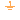
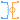
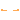
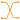

Basic elements of magnetic network models
This package contains the basic components of quasi-static flux tubes package.
Extends from Modelica.Icons.Package (Icon for standard packages).
| Name | Description |
|---|---|
|  Ground | Zero magnetic potential |
|  ElectroMagneticConverter | Electromagnetic energy conversion |
| Constant reluctance | |
| Constant permeance | |
| VariableReluctance | Variable reluctance |
| VariablePermeance | Variable permeance |
| LeakageWithCoefficient | Leakage reluctance with respect to the reluctance of a useful flux path (not for dynamic simulation of actuators) |
| EddyCurrent | For modelling of eddy current in a conductive magnetic flux tube |
|  Idle | Idle running branch |
| Short | Short cut branch |
|  Crossing | Crossing of two branches |
Zero magnetic potential
The magnetic potential at the magnetic ground node is zero. Every magnetic network model must contain at least one magnetic ground object.
| Name | Description |
|---|---|
| port |
Electromagnetic energy conversion
The electromagnetic energy conversion is given by Ampere's law and Faraday's law respectively:
Vm = N * i
N * dΦ/dt = -v

Vm is the magnetic potential difference applied to the magnetic circuit due to the current i through the coil (Ampere's law).
There exists a left-hand assignment between the current i (fingers) and the magnetic potential difference Vm (thumb).
Note: There exists a right-hand assignment between the current through the coil i (fingers) and the magnetomotive force mmf.
The mmf has the opposite direction compared with Vm. It is not used in Modelica.
For the complete magnetic circuit the sum of all magnetic potential differences counted with the correct sign in a reference direction is equal to zero: sum(Vm) = 0.
The magnetic flux Φ in each passive component is related to the magnetic potential difference Vm by the equivalent of Ohms' law: Vm = Rm * Φ
Note: The magnetic resistance Rm depends on geometry and material properties. For ferromagnetic materials Rm is not constant due to saturation.
Therefore the sign (actual direction) of Φ (magnetic flux through the converter) depends on the associated branch of the magnetic circuit.
v is the induced voltage in the coil due to the derivative of magnetic flux Φ (Faraday's law).
Note: The negative sign of the induced voltage v is due to Lenz's law.
Note: The image shows a right-handed coil. If a left-handed coil has to be modeled instead of a right-handed coil, the parameter N (Number of turns) can be set to a negative value.
The flux linkage Ψ and the static inductance L_stat = |Ψ/i| are calculated for information only. Note that L_stat is set to |Ψ/eps| if |i| < eps (= 100*Modelica.Constants.eps).
| Name | Description |
|---|---|
| N | Number of turns |
| Name | Description |
|---|---|
| port_p | Positive magnetic port |
| port_n | Negative magnetic port |
| pin_p | Positive electric pin |
| pin_n | Negative electric pin |
 Modelica.Magnetic.QuasiStatic.FluxTubes.Basic.ConstantReluctance
Modelica.Magnetic.QuasiStatic.FluxTubes.Basic.ConstantReluctanceConstant reluctance
This constant reluctance is provided for test purposes and simple magnetic network models. The reluctance is not calculated from geometry and permeability of a flux tube, but is provided as parameter.
Extends from Interfaces.TwoPort (Two magnetic ports for textual modeling), Modelica.Magnetic.QuasiStatic.FluxTubes.Icons.Reluctance (Icon for reluctance / permeance components).
| Name | Description |
|---|---|
| R_m | Magnetic reluctance [H-1] |
| Name | Description |
|---|---|
| port_p | Positive quasi-static magnetic port |
| port_n | Negative quasi-static magnetic port |
Modelica.Magnetic.QuasiStatic.FluxTubes.Basic.ConstantPermeanceConstant permeance
This constant permeance is provided for test purposes and simple magnetic network models. The permeance is not calculated from geometry and permeability of a flux tube, but is provided as parameter.
Extends from Interfaces.TwoPort (Two magnetic ports for textual modeling), Modelica.Magnetic.QuasiStatic.FluxTubes.Icons.Reluctance (Icon for reluctance / permeance components).
| Name | Description |
|---|---|
| G_m | Magnetic permeance [H] |
| Name | Description |
|---|---|
| port_p | Positive quasi-static magnetic port |
| port_n | Negative quasi-static magnetic port |
Variable reluctance
The reluctance of this model is controlled by a real signal input.
Extends from Interfaces.TwoPort (Two magnetic ports for textual modeling), Modelica.Magnetic.QuasiStatic.FluxTubes.Icons.Reluctance (Icon for reluctance / permeance components).
| Name | Description |
|---|---|
| port_p | Positive quasi-static magnetic port |
| port_n | Negative quasi-static magnetic port |
| R_m | Magnetic reluctance [H-1] |
Variable permeance
This constant permeance is provided for test purposes and simple magnetic network models. The permeance is not calculated from geometry and permeability of a flux tube, but is provided as parameter.
Extends from Interfaces.TwoPort (Two magnetic ports for textual modeling), Modelica.Magnetic.QuasiStatic.FluxTubes.Icons.Reluctance (Icon for reluctance / permeance components).
| Name | Description |
|---|---|
| port_p | Positive quasi-static magnetic port |
| port_n | Negative quasi-static magnetic port |
| G_m | Magnetic permeance [H] |
Leakage reluctance with respect to the reluctance of a useful flux path (not for dynamic simulation of actuators)
Differently from the flux tube elements of package Shapes.Leakage
that are calculated from their geometry, this leakage reluctance is calculated with reference to the total reluctance of a useful flux path. Parameter c_usefulFlux is the ratio of the useful flux over the total flux.
Extends from BaseClasses.Leakage (Base class for leakage flux tubes with position-independent permeance and hence no force generation; mu_r=1).
| Name | Description |
|---|---|
| c_usefulFlux | Ratio useful flux/(leakage flux + useful flux) = useful flux/total flux [1] |
 | |
| Name | Description |
|---|---|
| port_p | Positive quasi-static magnetic port |
| port_n | Negative quasi-static magnetic port |
| R_mUsefulTot | [H-1] |
For modelling of eddy current in a conductive magnetic flux tube
Eddy currents are induced in a conductive magnetic flux tube when the flux changes with time. This causes a magnetic voltage drop in addition to the voltage drop that is due to the reluctance of this flux tube. The eddy current component can be thought of as a short-circuited secondary winding of a transformer with only one turn. Its resistance is then determined by the geometry and resistivity of the eddy current path. Alternatively, a total conductance parameter can be used.
Partitioning of a solid conductive cylinder or prism into several hollow cylinders or separate nested prisms and modelling of each of these flux tubes connected in parallel with a series connection of a reluctance element and an eddy current component can model the delayed buildup of the magnetic field in the complete flux tube from the outer to the inner sections. Please refer to [Ka08] for an illustration.
Extends from Interfaces.TwoPort (Two magnetic ports for textual modeling), Modelica.Thermal.HeatTransfer.Interfaces.PartialElementaryConditionalHeatPort (Partial model to include a conditional HeatPort in order to dissipate losses, used for textual modeling, i.e., for elementary models).
| Name | Description |
|---|---|
| useConductance | Use conductance instead of geometry data and rho |
| G | Equivalent loss conductance G=A/rho/l [S] |
| rho | Resistivity of flux tube material (default: Iron at 20degC) [Ohm.m] |
| l | Average length of eddy current path [m] |
| A | Cross sectional area of eddy current path [m2] |
| useHeatPort | = true, if heatPort is enabled |
| T | Fixed device temperature if useHeatPort = false [K] |
| Name | Description |
|---|---|
| port_p | Positive quasi-static magnetic port |
| port_n | Negative quasi-static magnetic port |
| heatPort | Optional port to which dissipated losses are transported in form of heat |
Idle running branch
This is a simple idle running branch. The magnetic flux through this component is equal to zero.
Extends from Interfaces.TwoPort (Two magnetic ports for textual modeling).
| Name | Description |
|---|---|
| port_p | Positive quasi-static magnetic port |
| port_n | Negative quasi-static magnetic port |
Short cut branch
This is a simple short cut branch. The magnetic voltage of this component is equal to zero.
Extends from Interfaces.TwoPort (Two magnetic ports for textual modeling).
| Name | Description |
|---|---|
| port_p | Positive quasi-static magnetic port |
| port_n | Negative quasi-static magnetic port |
Crossing of two branches
This is a simple crossing of two branches. The ports port_p1 and port_p2 are connected, as well as port_n1 and port_n2.
| Name | Description |
|---|---|
| port_p1 | Positive port_p1 connected with port_p2 |
| port_p2 | Positive port_p2 connected with port_p1 |
| port_n1 | Negative port_n1 connected with port_n2 |
| port_n2 | Negative port_n2 connected with port_n1 |